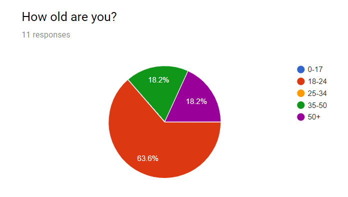
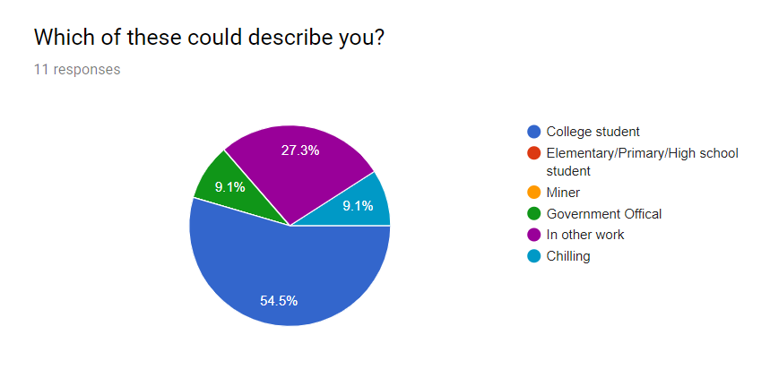
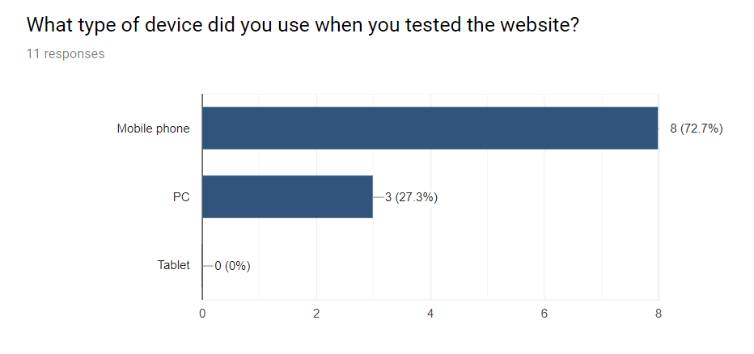
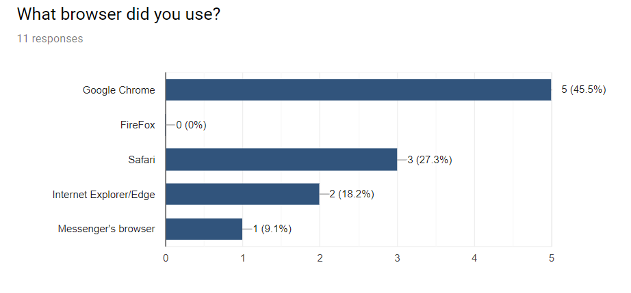
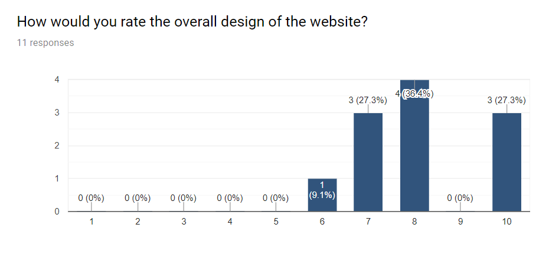
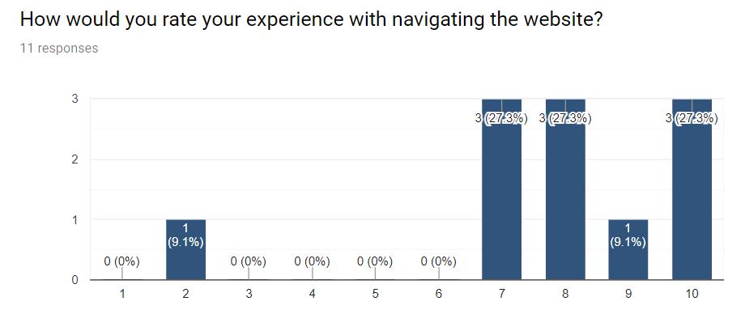
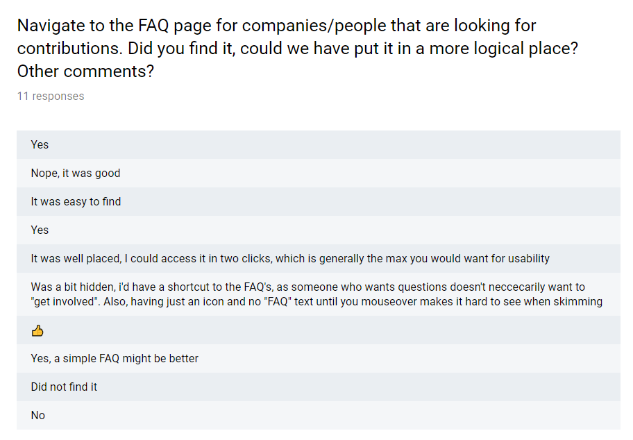
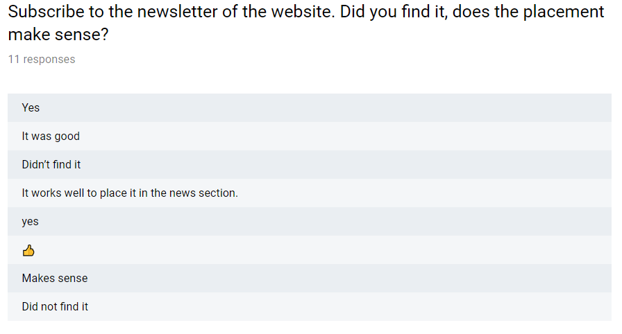
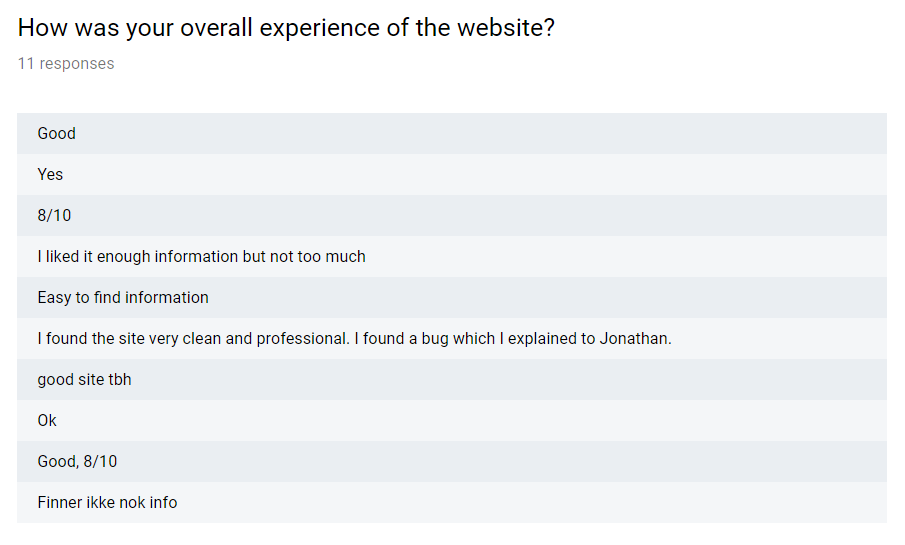

Jonathan Brooks, Nicolai Andre Dalaaker, Bram Goosink, Kristian Lindberg Mikalsen, Line Steen
11 November 2018
The European Partnership for Responsible Minerals (EPRM) is a multi stakeholder partnership that is aiming to improve the working and social conditions of those involved in the extraction and processing of 3TG minerals. The proposed case is to redesign their current website to better communicate relevant information to viewers. Whilst the case is based on a real scenario, EPRM itself is not involved, and the produced deliverables will not be employed by the partnership. Instead, the case has been put forward by a group member, Bram Goosink, who is an ex-employee of the EPRM.
back to topWe start with asking the tester what type of device they are on, and what browser they use. This way we can check how the website works on different types of devices and browsers. Then we ask some questions about who they are so that we can check if any of the testers are in our target demographic. After that we ask about the general design and how it was to navigate the website. We also give the tester two tasks to complete to check if the website intuitive to navigate. We end the google form with feedback questions.
back to topWith our main target audience being miners or government officials, it was a bit of a challenge reaching them in any significant way. In other words, as expected our main target groups represent a fairly small part of our dataset. But the groups we did reach are shown in the figures below:
 General info about the subject: 19 years old, student. He used a laptop with google chrome to test the website.
Subjects first time on website It seems like he understands the structure and design of the website, because he could easily find the information he was asked to find and he did not have any questions regarding what each of the pages did.
Feedback from subject: On the homepage, the video takes up too much space and the navbar should stick to the top of your browser before you scroll past the video. The video should also have some kind of indication that there is more content below the video, arrow for example. The navbar should stick to the top of the browser on every page, for ease of navigation. The buttons on the navbar should have a bigger “hitbox” so that it is easier to press them. The background colour could have been something else than white, a light orange or something like that.
General info about the subject: in her 50’s, working as a diplomat. She used an Ipad with the default safari browser
Subjects first time on website She expressed that it was clean and easy to navigate. Liked that we put everything in a hierarchy of pages, instead of just presenting many buttons to every page. She easily found what she was looking for when she was quizzed - such as finding the address or a member company.
Feedback from subject:The website struggles a bit on touch devices, as many hover effects are not properly displayed. Furthermore, she did not experience other effects such as the structure infographic fade, or the colours on the ‘get involved pictures’ as she would simply have clicked instead of hovering over. She also found the ‘get involved animation’ a bit noisy, as text from the background was still readable and disturbed the selection screen depending on where you were when you clicked. However the test subject found the website very clean and easy to navigate, despite knowling little about the EPRM, so most of her difficulties arises from the usage of touchscreen as input.
back to topA summary of the different platforms (devices and browsers) that your testers used are shown in the images below. We reached testers using a variety of devices and browsers, including PC, and touch screen devices/mobile.
  back to topIn general it seems most of our testers thought the design looked good, as can be seen in the figure below, we got an average score of 8.1 on our design. One tester commented that the design looked “Veldig ryddig og profesjonell”, and as far as constructive criticism goes, one tester commented that they “Didn't like the homepage, and the page was zoomed in a bit when it loaded.”, another tested though the design looked good, but that it lacked a little “polish”.
In general, our testers were satisfied with the navigation and useability of the website, as can be seen in the figure below, our testers gave us an average score of 7.8, with most responses giving 7 or above, and one outlier giving a score of just 2.
We asked our testers to attempt to navigate to two different parts of the website; to find the newsletter and the FAQ page. It seems most testers were able to do this, although some found the navigational structure a bit confusing. These responses can be seen in the figures below.
 As can be seen in the responses below, most testers seemed to think there was just the right amount of information and pictures on the site, although some found the information a bit hard to find, which coincides with the feedback we got on the navigation and useability. It’s not that the content is not there, but it can be a bit difficult to find if you are not familiar with the subject matter.
 back to topLooking at the feedback, our response can be summarized into the following categories:
Mobile platforms: Whilsts the website contents is designed to be responsive, we forgot to change a lot of the features that are dependent on an interface with cursor rather than touch. An example of this is all the “:hover’ styling in css, which has no effect on touchscreens. To tackle this we need to make a list of the different elements that rely on cursor interfaces and adapt them to more binary interaction possibilities and apply them to smaller screen sizes. The get-involved images and video buttons on the home screen would be a starting point for this.
In terms of the responsiveness of the content itself, the website does not perform as well on small screens as wished for by users, especially in comparison to its larger desktop version. In order to improve this functionality, grid or flexbox styling can be used, or otherwise using the float property more universally to create better response to window size changes.
Home page: There were some complaints about the landing video being to large, and that scrolling down to the navigation bar was a nuisance. Therefore, new developments would shrink the height of the video so that some of the website is already viewable when landing on the page. The nav bar location would need some user testing as to see what is best, either have it placed at the bottom of the video the way is it is now, but already within the viewing window upon entering the website, or placing it at the top as seen throughout the rest of the website.
Get involved: The get involved selection screen proved to be too noisy for some users. It was hard to read the texts on the images and the background behind the images causes additional noise. A future fix would be to make a larger contrast between the selection images and the background (possibly hide the background or have a completely non transparent box behind). The images should also have had their texts oriented in a more readable fashion, rather then there current vertical alignment.
The content of the get involved pages appeared to be difficult to grasp for some users. This is partially to blame on the complex language and structure of the text provided by the client, and so in future, more accessible language needs to be used. This would need to be done with permission or even in collaboration with the client.
back to topAll in all our group thinks this has been an interesting project, that has given us valuable insight in making a larger website, and some experience in the planning that goes into making something for a “real”-ish client. Although, at times being restricted to using just vanilla Javascript, HTML and CSS has been a challenge, it ultimately ended up being useful in limiting the scope of the project, and allowing us to learn the fundamentals of programming a functional website. Having to first design the website as mockups and think through the layouts and overall structure of the page before we started coding was also a nice way to work. Although not everything we had planned proved to be as easy to implement, in the end we feel the result is close to what we expected.
back to top